git good.
an intro to source control
Scott Thomas
Institute of Astronomy, University of Cambridge
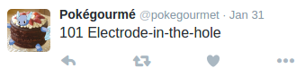
@pokegourmet
Get the files: ast.rono.me/git-good
For some of you this tutorial may be…
But I hope that for the rest it is…
Outline
- announcement Why source control?
- fast_forward Get going with git
- face Git for you
- group Git for collaboration
- computer Sample exercises
- live_help Common questions
announcement
Why source control?
live_help "Uh, what is source control?"
You need
source control
because…
You suck at handling versions
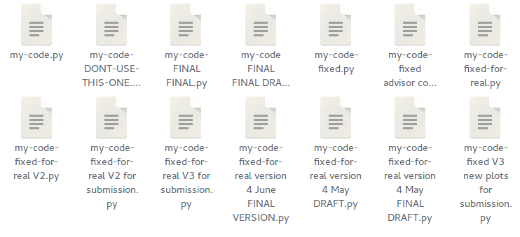
You make mistakes
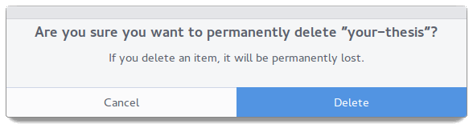
You work with others and those people suck at versions and make mistakes too
You’ve probably done this:
import stuff
import things
import irrelevant_thing
some_nice_code()
some_more_nice_code()
old_code()
crap_code()
this_never_worked_anyway()
You’ve probably done this:
import stuff
import things
# import irrelevant_thing # no longer necessary
some_nice_code()
some_more_nice_code()
# old_code()
# crap_code()
# this_never_worked_anyway()
# OLD CODE KEPT AROUND "JUST IN CASE"
You want a job
Source control is the answer
- cachedGo back to previous versions
- backupBack up and share your data easily
- folder_sharedWork collaboratively on code or documents
… and the tools to use it are free and powerful.
fast_forward
Get going with 
How does work?
- 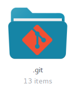
Git maintains a hidden folder in your project - 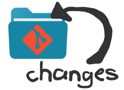
You commit snapshots of changes to this folder - 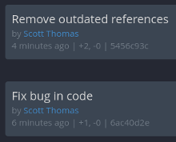
Git keeps track of everything
live_help "Why is this better than just backing up?"
Setting up
-
Linux: get git via your package manager; for example,
sudo apt-get install git -
OSX: may install automatically if you run
gitin the terminal, or go to git-scm.org/download/mac -
Windows: get a better console from cmder.net or try git-for-windows.github.io
Then identify yourself:
$ git config --global user.name "Scott Thomas"
$ git config --global user.email "swt30@ast.cam.ac.uk"
Set up a repository
$ git init
Initialized empty Git repository in /home/sthomas/Documents/my-project/.git/
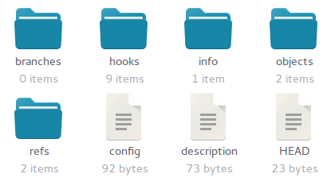
Show some commitment
Open up your favourite text editor and save a few lines of text into a README document (say, “README.md”). Then:
$ git add README.md
$ git commit
[master (root-commit) 52b46ae] Add README
1 file changed, 2 insertions(+)
create mode 100644 README.md
you may need to tell git which editor to use:
$ git config --global core.editor= ...
What just happened?
$ git log
commit a04cbdc1ab5943837eb2c1a6f80c3e725a45be6d
Author: Scott Thomas <swt30@ast.cam.ac.uk>
Date: Mon Jun 6 17:51:21 2016 +0100
Initial commit with README
$ git status
On branch master
nothing to commit, working directory clean
The two-step commit process
- 0. Edit
Make changes as normal… - 1. Stage
Mark any changes that you want to include… - 2. Commit
Lock it in!
git status will show you what’s been added and what’s waiting.
- computer Change or add to the text in README,
git addit, then change the text again and checkgit status. What happened? Commit those changes too.
The three key commands
-
git status: Check which files have been changed -
git add <files or folders>: Stage the changes -
git commit: Lock it in
live_help "What happens once I’ve committed?"
live_help "What if I made a mistake when committing?"
face
Git for you
Useful tools for the lone astronomer
git checkout
lets you move between commitsgit tag
marks a commit for later referencegit reset
is your “undo” button
Use git checkout to move between commits
$ git log
commit ffa75e3a59654373383ec6554de8a8d58df29092
Author: Scott Thomas <swt30@ast.cam.ac.uk>
Date: Mon Jun 6 20:17:35 2016 +0100
Add author to README
README.md | 2 ++
1 file changed, 2 insertions(+)
commit 52b46aeec2fb86d32e6d8925358997e289140bd8
Author: Scott Thomas <swt30@ast.cam.ac.uk>
Date: Mon Jun 6 18:30:41 2016 +0100
Add README
README.md | 2 ++
1 file changed, 2 insertions(+)
$ git checkout 52b46aee
Note: checking out '52b46aee'.
You are in 'detached HEAD' state. You can look around, make experimental
changes and commit them, and you can discard any commits you make in this
state without impacting any branches by performing another checkout.
If you want to create a new branch to retain commits you create, you may
do so (now or later) by using -b with the checkout command again. Example:
git checkout -b <new-branch-name>
HEAD is now at 52b46ae... Add README
- computer
git checkoutyour first commit and look at the README. Usegit checkout masterto return to where you started.
Tagging interesting commits
$ git tag original-plots-for-paper
$ git checkout original-plots-for-paper
Use git tag to give a label to a particular commit and more easily revisit it later. (I use this to tag submitted versions of plots or papers, for example).
Undoing your screw-ups
-
git reset -- <file>unstages a file once you’vegit added it -
git reset --harddiscards all unstaged changes and reverts to the last commit. -
git checkout <file>is another way of achieving the same thing.
(DANGER)
-
computer Make a new file and stage it. Decide you don’t actually want it after it. Use
git resetto unstage it. Delete it. -
computer Delete your README. Then bring it back from the dead by restoring to the last commit.
group
Git for collaboration
Put it all online: introducing 
a.k.a. free backups: www.github.com
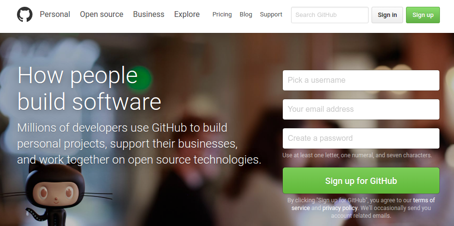
Creating a
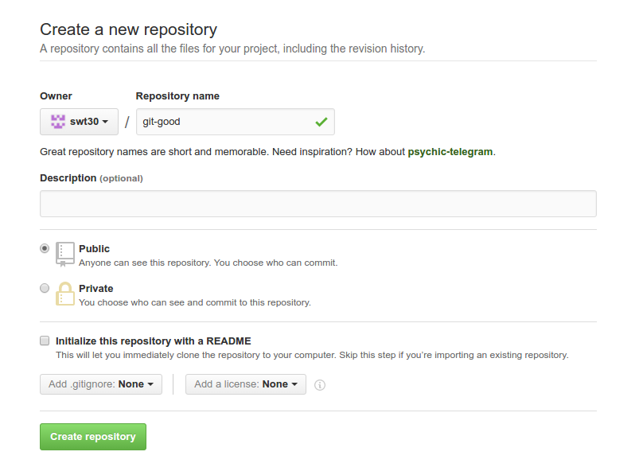
live_help "What if I don’t want it to be public?"
Tell about the on
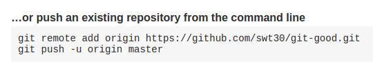
git remote add origin https://github.com/username/reponame.git
Check it with git remote -v
live_help "What’s ‘origin’?"
Send your changes
- first time:
git push -u origin master - subsequently:
git push
$ git push -u origin master
Counting objects: 3, done.
Delta compression using up to 8 threads.
Compressing objects: 100% (2/2), done.
Writing objects: 100% (3/3), 392 bytes | 0 bytes/s, done.
Total 3 (delta 0), reused 0 (delta 0)
To https://github.com/swt30/git-good.git
* [new branch] master -> master
Branch master set up to track remote branch master from origin.
- computer Do this and take a look at your shiny new github repository!
Get a copy of something
git clone https://github.com/username/repo.git
- computer Delete your local repository and then clone a fresh copy.
- computer Download, or fork and download my repository: https://github.com/swt30/git-good.git
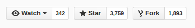
Update a local copy
git pull
- computer I’m going to make a change to the repository you just cloned. Once I do, use
git pullto get it.
Question time!
Common questions:
- live_help “What about committing things that aren’t text files?”
- live_help “How does git handle multiple people working at the same time?”
- live_help “What do I do about files I don’t want to commit?”
- live_help “Why are git’s commands so inscrutable?”
- live_help “I am so scared of breaking everything; can you please reassure me?”
Question time!